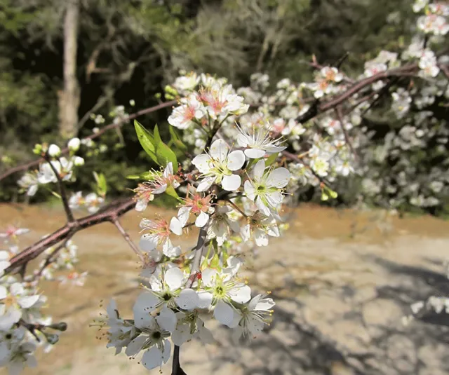

Wild plum
Wild plum is a wild fruit you can forage from July to September in Ontario, Quebec, Prairies and Atlantic Canada. Thicket-forming shrub with early white blossom and small red to yellow plums.

When is wild plum in season in Canada?
Wild plum is usually in season July to September. Timing shifts with weather, latitude and altitude.
Where does wild plum grow in Canada?
Wild plum grows in Alberta, Manitoba, New Brunswick, Newfoundland and Labrador, Nova Scotia, Ontario, Prince Edward Island, Quebec, Saskatchewan. Regions: Ontario, Quebec, Prairies, Atlantic Canada.
How do you recognise wild plum?
Thicket-forming shrub with early white blossom and small red to yellow plums.
How do you harvest wild plum?
Pick only fully ripe fruit that comes away easily, into a shallow container so it doesn't crush. Leave plenty on the plant for birds and wildlife.
How do you eat wild plum?
Jam, fruit leather, plum sauce.
How do you store wild plum?
Jam or dry.
What is wild plum good for?
Vitamin C.